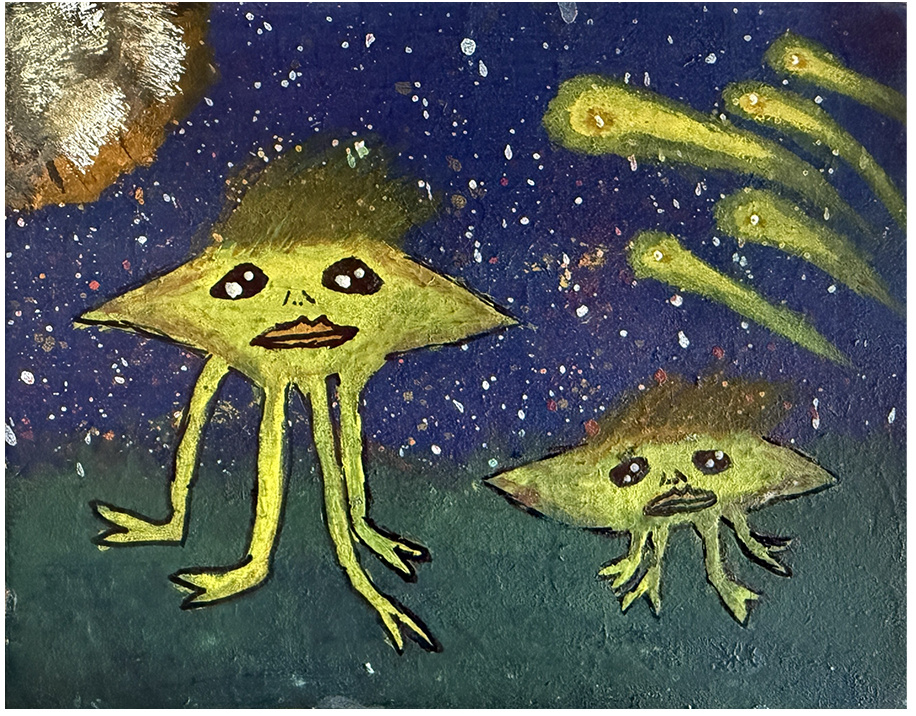
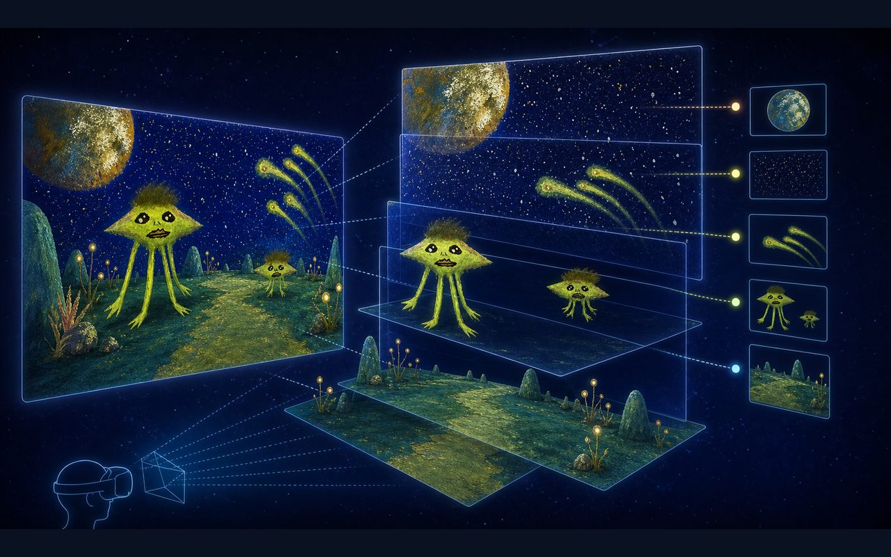
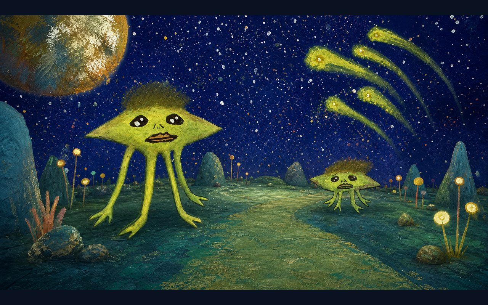
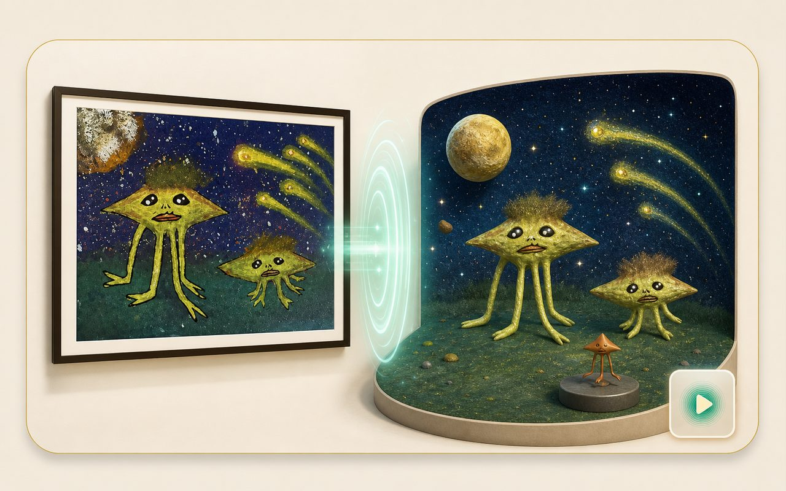

原作入口
从墙面作品进入互动界面，让观众先看见原作，再进入它背后的结构与世界。
Quest VR Art Experience
从一张平面作品出发，延展出结构拆解、故事导览与可进入的沉浸场景，让观众真正走进孩子的想象世界。
TS01-030 · 我外星朋友

从墙面作品进入互动界面，让观众先看见原作，再进入它背后的结构与世界。

把星空、星球、角色、地形与发光植物拆成空间层次，展示画面如何被翻译成 VR 场景。

用叙事导览解释作品里的角色关系、想象背景和观看路径，让作品不只是静态展示。

观众从作品进入 360° 世界，在画面内部移动、观看和返回展厅，形成真正的沉浸体验。
Project highlights
Distribution strategy
继续作为高质量现场体验版，适合机构、客户、学校和展会演示。
用轻量页面说明项目价值，发链接即可传播，也能承接视频与案例资料。
后续用 Unity/VRChat SDK 重建轻量社交导览版，主打多人参观与线上活动。